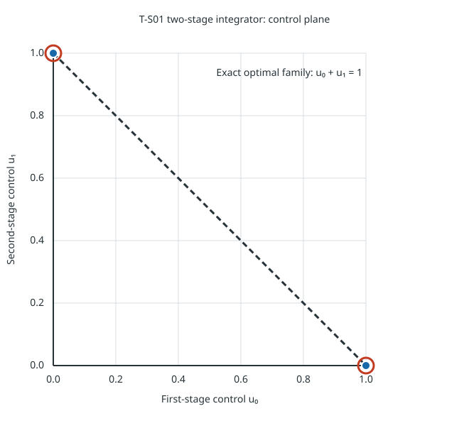

This report renders the saved paired run for the two-stage integrator: x₀=0, xₜ₊₁=xₜ+uₜ, uₜ∈[0,1], and terminal objective (x₂−1)². It compares strategy outputs and descriptive functional timings for this single fixture.

● Strategy A: reach-back: 2 distinct saved selected histories
● Strategy B: paired capture: 2 distinct saved selected histories
One warmup pair was excluded; seven measured pairs alternated execution order. All 16 trials completed successfully. Each strategy selected two distinct histories with zero original and recomputed objective; original-data feasibility and objective checks passed numerically. These witness checks do not establish separate optimality or completeness proofs.
| Strategy | Median end-to-end (ms) | Range (ms) |
|---|---|---|
| Strategy A: reach-back | 5.325654 | 5.263006–9.010723 |
| Strategy B: paired capture | 1.310374 | 1.258761–2.004882 |
The interval covers strategy preparation through two witness checks. It excludes process startup, shared scenario/provider setup, JSON serialization, build and rendering. No separate limiter or per-attempt resource-cap profile was collected; these values do not support a general performance-winner claim.
ce7cc08f585fd80f5e63d30becf5ef4054fd879ebbeb83947627a197d71dd380dbaa5cfae12e22cd6d79b12e66ef08275b2c390a2271031cdcd5e96d5da577c3fdab52277bc004e8d7ce79b925c650929c32de4a / 2271031cdcd5e96d5da577c3fdab52277bc004e8d7ce79b925c650929c32de4aThis is one registered-strategy functional comparison, not a general performance ranking or the full #597 matrix. The separate OSQP/HPIPM solve-phase measurements use different timing boundaries.